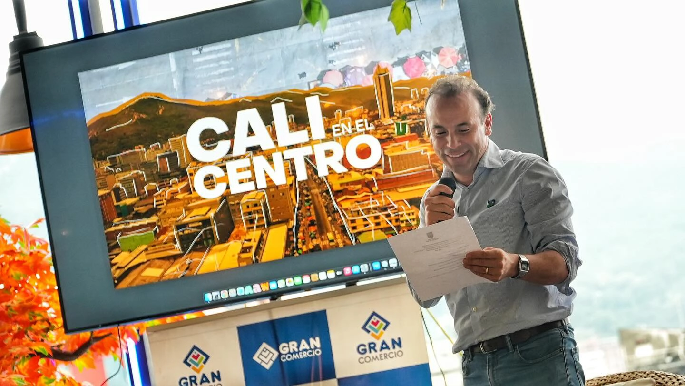
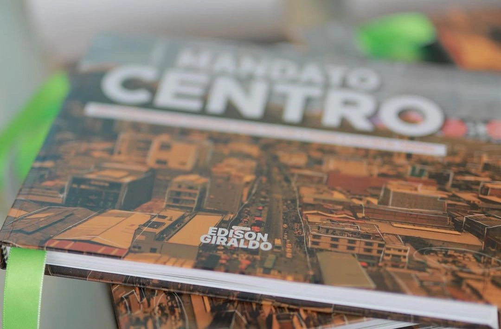
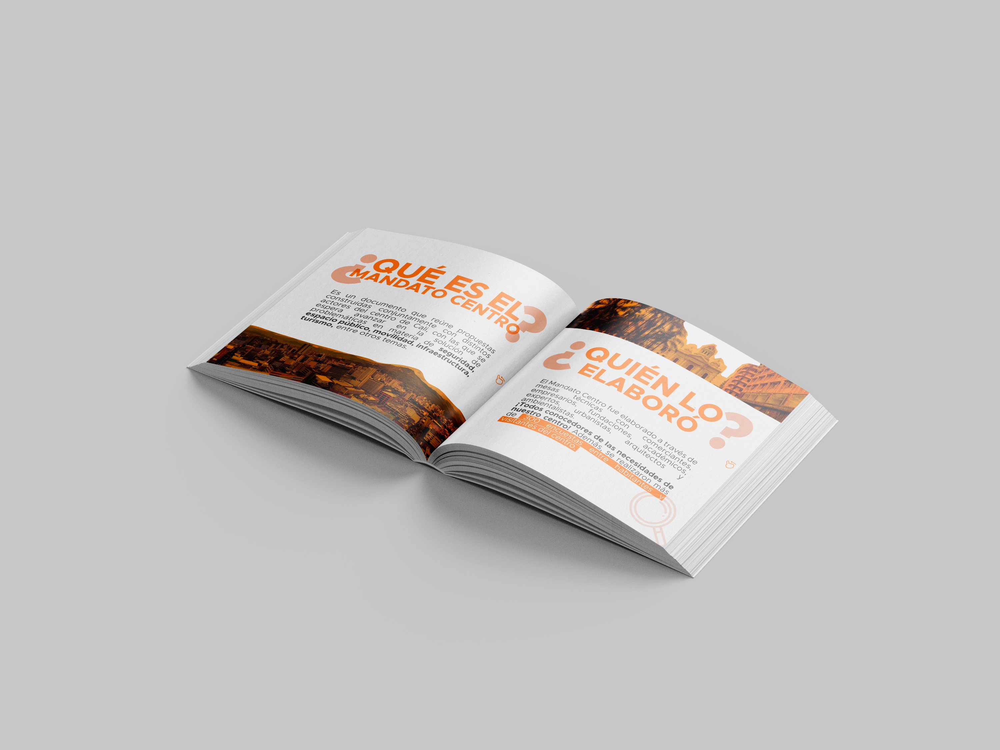
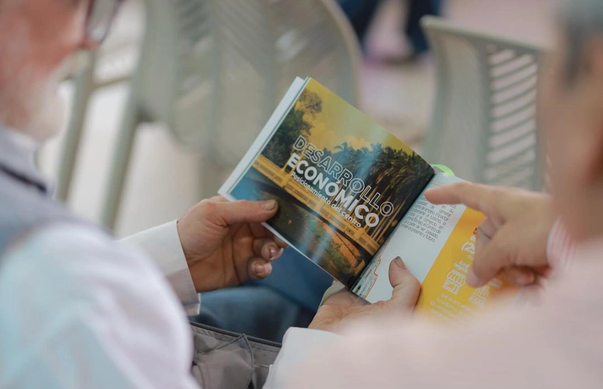
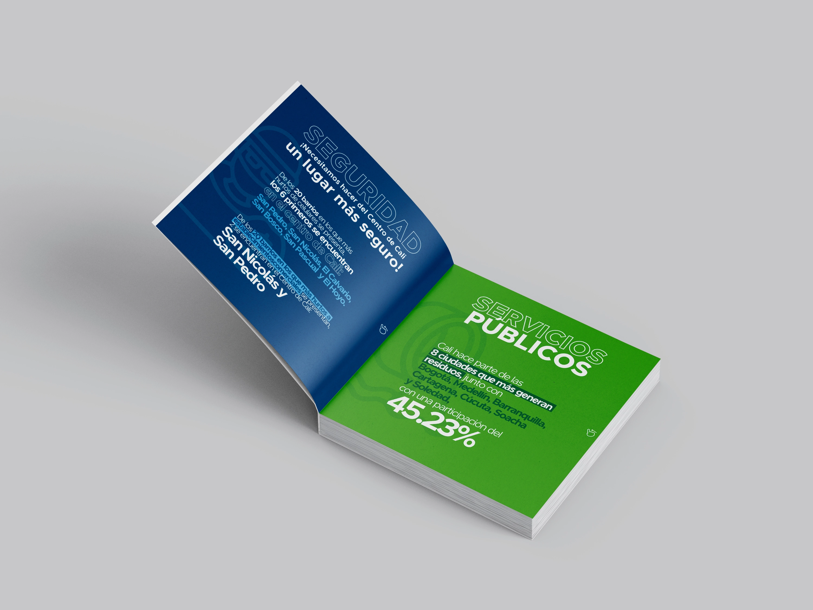
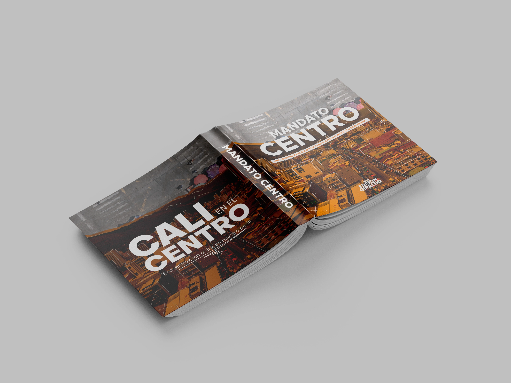

Mandato Centro
A book that makes a plan for downtown Cali easy to read and understand.
- Discipline
- Editorial design
- Client
- Cali City Council
- Year
- 2024
- Role
- Editorial design and layout
- Tools


Brief
Mandato Centro is a collective initiative for the recovery and transformation of downtown Cali, gathering proposals on urban renewal, public space, mobility, safety, infrastructure, economic activity and social development.
Approach
I designed and laid out a book that makes each problem and its proposed solution easy to follow. Working closely with the strategy team over one month, I balanced the graphic goals with the purpose and message behind the project.
Result
100 printed copies distributed in spaces tied to urban development, infrastructure, tourism and public space, and more than 25,000 interactions with the digital version.
Flip through the book
Explore the complete publication, page by page.
A closer look





